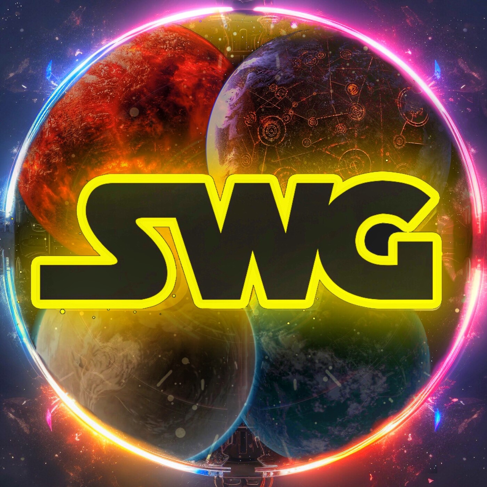

Pente Patrol Star Wars
Star Wars Stories For Every Fan ❤️
RSS feed
Fantasy Folklore
Star Wars What If Stories ❤️ Hello Star Wars Fans! I am a fellow Star Wars nerd who loves discussing theories, what if's and news in the community! Subscribe to join the Fantasy family as we share our love for the galaxy far far away! Thanks for watching and may the force be with you!
RSS feed
The Star Wars Galaxy
Hello there Star Wars fans, and welcome to my channel! On this channel I post a “What If” scenario around four times a week for everyone to enjoy! Prequel fan? Originals only? Love the sequels? Well you are absolutely welcome here!💙💚 Contact: TheStarWarsGalaxy33@gmail.com
RSS feed